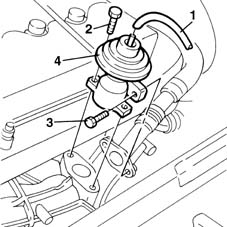

1080C10 e.g.r. valve - r + r
- Path
- Procedures > 10 ENGINE UNIT > 1080 EXHAUST EMISSION CONTROL SYSTEM > 1080C exhaust gas recirculation system (e.g.r.) > 1080C10 e.g.r. valve - r + r
- Kind
- repair procedure (removal / refitting; the operation number is the code)
- Applies to
- engines: 1.9 JTD 8V; all production periods
- Interactive page
- https://sloeber94.github.io/elrnDB-fMltpl/en/#/2891430
Applies to: engines: 1.9 JTD 8V; all production periods
 Removing
Removing
 Refitting
RefittingOpen the bonnet lid.
1. Disconnect the vacuum intake pipe from the EGR valve.
2. Unscrew the exhaust manifold retaining bolts.
3. Unscrew the exhaust gas intake pipe retaining bolts.
4. Remove the EGR valve.

Applies to: engines: 1.9 JTD 8V; all production periods
Refitting
RemovingFit the valve in its seat.
Tighten the bolts securing the valve to the exhaust manifold.
 | Fastening | Component | Ø | Value (daNm) |
|---|---|---|---|---|
- | Bolt | EGR VALVE | M8 | 2.5 |
Tighten the bolts securing the valve to the exhaust gas delivery pipe.
| Fastening | Component | Ø | Value (daNm) |
|---|---|---|---|---|
- | Bolt | EGR VALVE | M8 | 2.5 |
Connect the vacuum intake pipe.
Close the bonnet lid.